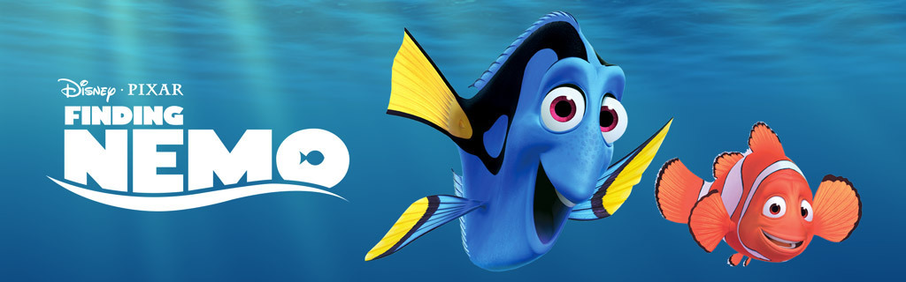

- Directors: Andrew Stanton Lee Unkrich (co-director)
- Release date: May 30, 2003 (USA)
- Box office: 940.3 million USD
- Producer: Graham Walters
- Screenplay: Andrew Stanton, Bob Peterson, David Reynolds
- Synopsis:
- Review:

- Images: 
A clown fish named Marlin lives in the Great Barrier Reef loses his son, Nemo. After he ventures into the open sea, despite his father's constant warnings about many of the ocean's dangers. Nemo is abducted by a boat and netted up and sent to a dentist's office in Sydney. So, while Marlin ventures off to try to retrieve Nemo, Marlin meets a fish named Dory, a blue tang suffering from short-term memory loss. The companions travel a great distance, encountering various dangerous sea creatures such as sharks, anglerfish and jellyfish, in order to rescue Nemo from the dentist's office, which is situated by Sydney Harbor. While the two are doing this, Nemo and the other sea animals in the dentist's fish tank plot a way to return to Sydney Harbor to live their lives free again.
--Written by: Anonymous